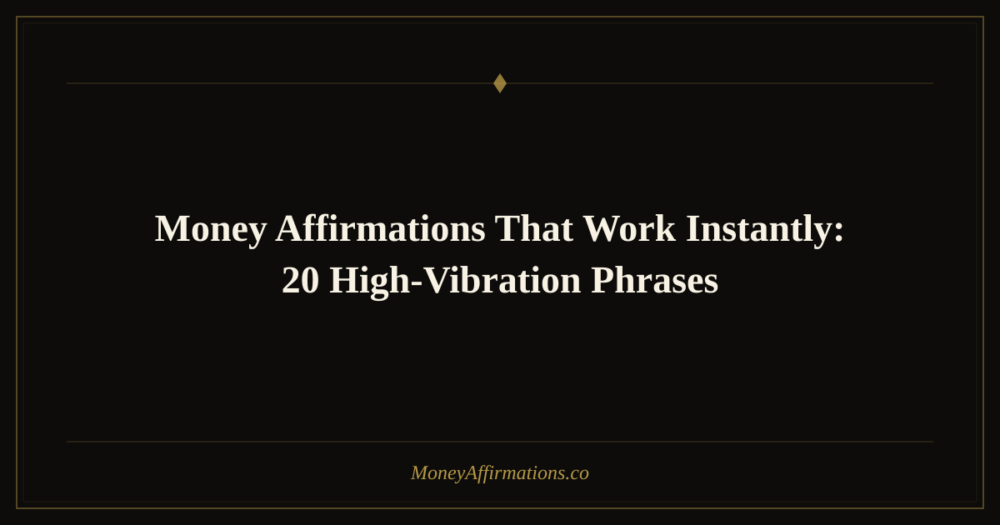

Money Affirmations That Work Instantly: 20 High-Vibration Phrases

Sometimes you do not have an hour for journaling and meditation. You need a fast reset — a way to cut through anxious thoughts about bills, scarcity, or financial uncertainty and return to a place of confidence and openness in under two minutes. That is exactly what high-vibration money affirmations are designed to do.
The 20 phrases in this post are short, sharp, and emotionally charged. They are built for speed without sacrificing depth. Each one is a complete energetic pivot: a statement that immediately challenges a low-frequency money story and replaces it with one rooted in possibility, power, and abundance. Read them, say them out loud, and feel the shift happen in real time.
What are high-vibration money affirmations?
The concept of "vibration" in this context refers to your dominant emotional and mental state. Fear, scarcity, and resentment around money are considered low-vibration states — they contract your awareness and block creative, wealth-building thinking. Confidence, gratitude, and openness are high-vibration states that expand your perception and make you more likely to notice and act on financial opportunities.
High-vibration affirmations are statements that trigger an immediate emotional lift. They tend to be short, bold, and declarative. Rather than a gentle nudge, they deliver a direct signal to your nervous system: "We are safe. We are prosperous. Money is flowing." Even if your rational mind pushes back at first, the repetition of these statements creates new neural grooves that gradually become the default pathway your mind follows when money comes to mind.
20 high-vibration money affirmations that work instantly
- Money flows to me easily and without limit.
- I am open and ready to receive wealth right now.
- I choose abundance over fear in every moment.
- I am worthy of financial success and I claim it now.
- Wealth is my birthright and I accept it fully.
- Every dollar I spend returns to me multiplied.
- I am financially free and getting freer every day.
- Money loves me and I love money right back.
- I release all resistance to wealth and let it in.
- My energy is magnetic and money is drawn to it.
- I attract abundance simply by being myself.
- Prosperity is pouring into my life from all directions.
- I trust the universe to provide for me abundantly.
- I am always in the right place to receive more money.
- Financial miracles are normal and expected in my life.
- I am rich in mind, rich in spirit, and rich in reality.
- My bank account grows every single day.
- I welcome unexpected income with joy and gratitude.
- My relationship with money is healthy, strong, and abundant.
- I am a yes to wealth, and wealth is a yes to me.
How to use these affirmations
The beauty of high-vibration affirmations is their flexibility. You can use them in almost any situation where your money mindset needs a quick reset. Before a salary negotiation, say three of them in the bathroom mirror. When you check your bank balance and feel a knot in your stomach, take sixty seconds to repeat your favorites out loud. When anxiety about finances surfaces at night, whisper them until the feeling softens.
For a structured practice, choose five affirmations from the list above and spend three minutes with them each morning. Stand up, breathe deeply, and speak each one with conviction. Do not rush through the list like a checklist — let each statement land before moving to the next. Feel, even briefly, what it would be like if that statement were completely and undeniably true.
You can also write your chosen affirmations on sticky notes and place them where you will see them throughout the day: your laptop screen, your bathroom mirror, your car dashboard. These micro-exposures add up and keep your vibration elevated without requiring dedicated practice time.
When to use instant money affirmations — specific situations
High-vibration affirmations are most powerful when used at exact moments of financial stress or decision-making, not only as a general morning practice. Learning to deploy them at the right moment turns them from a daily habit into a real-time financial tool.
Before salary negotiations or rate-setting. The minute before you say your price out loud is when self-doubt hits hardest. Two minutes of high-vibration affirmations in a private space — a bathroom, your car, a quiet hallway — can shift your body state from contracted to open before you walk into the conversation. Research on power posing and self-affirmation consistently shows that brief pre-performance rituals improve confidence and outcome quality.
When opening financial statements. Many people feel a spike of dread when opening bank statements, credit card bills, or tax documents. That dread is not just emotional discomfort — it causes avoidance, which leads to worse financial outcomes. Repeating three grounding affirmations before opening the document changes the emotional context of the information you are about to receive. You read the same numbers with a different nervous system.
After a financial disappointment. A lost client, a declined loan, an unexpected expense, or a month where income fell short — these moments can set off cascades of negative money thinking that are hard to stop once they start. Instant affirmations work as a pattern interrupt. They do not deny what happened, but they prevent one setback from becoming a full identity collapse. "I release this setback and trust that money continues to flow to me" is not denial; it is resilience.
During the urge to make a reactive purchase. Emotional spending is almost always preceded by a feeling of lack — boredom, inadequacy, stress, or the sense that you deserve to feel better right now. Saying "I am already abundant and I choose to spend with intention" creates a gap between impulse and action. Even a thirty-second pause to repeat one affirmation can be enough to make the difference between a purchase you feel good about and one you regret.
Tips to make them work faster
- Match the energy, not just the words. A high-vibration affirmation said in a monotone voice has limited impact. Bring genuine enthusiasm — even if it feels forced at first, the body responds to your vocal energy.
- Breathe before you begin. Three slow, deep breaths before your affirmation practice calm the nervous system and drop you out of fight-or-flight, making you far more receptive to new beliefs.
- Do a body scan after each statement. Notice where you feel the affirmation land — chest, gut, shoulders. Physical awareness deepens the imprint and helps you identify which phrases resonate most powerfully.
- Stack them onto existing habits. Attach your affirmation practice to something you already do daily: brewing coffee, brushing teeth, or commuting. Habit stacking makes consistency effortless.
- Celebrate small financial wins immediately. Every time money comes in — even a few dollars — say one of these affirmations as a thank-you. This trains your brain to associate positive emotion with receiving money.
Frequently Asked Questions
Why do some affirmations feel false when I say them?
That feeling of falseness is actually a good sign — it means the affirmation is challenging a deeply held belief. Your subconscious mind is flagging the mismatch between the new statement and the old story. The discomfort is temporary. Keep repeating the affirmation consistently and the resistance will soften as new neural pathways are established. If a phrase feels completely unbelievable, try a slightly softer version — "I am open to money flowing easily" rather than "money flows to me easily."
How many affirmations should I focus on at once?
Three to five is the sweet spot for most people. Too few and your practice may feel stale; too many and none of them gain the repetition needed to take root. Choose the phrases that produce the strongest emotional response — positive or uncomfortable — as those tend to be the ones working hardest on your deepest beliefs. Rotate your selection every few weeks to keep the practice feeling fresh and targeted.
Can affirmations actually change my financial situation?
Affirmations alone do not deposit money into your account, but they reliably change the thinking and behavior patterns that determine your financial outcomes. Research on self-affirmation shows it reduces defensive thinking, increases problem-solving under stress, and improves decision-making — all of which have direct financial consequences. Think of affirmations as the mindset foundation that makes every other financial action more effective.
For a broader library of powerful statements, visit the full money affirmations collection where you will find hundreds of phrases grouped by purpose and intention.